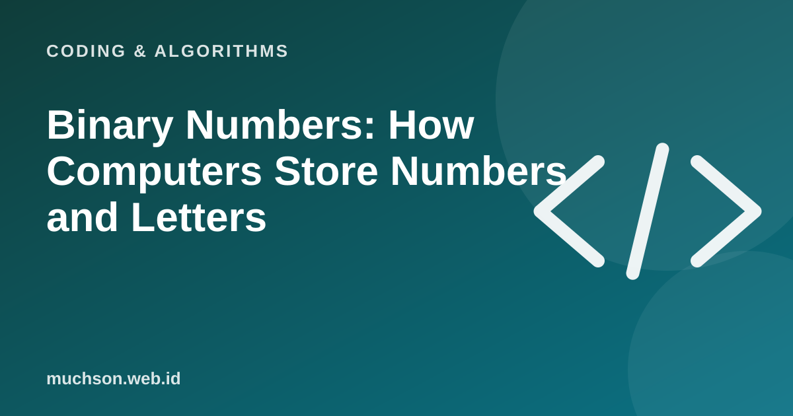

Home › Articles › Coding & Algorithms
Coding & AlgorithmsBinary Numbers: How Computers Store Numbers and Letters
Everything on a computer, from photos to WhatsApp messages, is in the end stored as a series of zeros and ones. That sounds scary, but the rules are simple and you can master them in a few minutes.

Why only 0 and 1?
Electronic devices are most reliable at telling two states apart: current or no current, high or low voltage. Those two states are written as 1 and 0. A single binary digit is called a bit, and eight bits are called a byte.
How do you read it?
In decimal, each position is worth a multiple of 10 (ones, tens, hundreds). In binary, each position is worth a power of 2: 1, 2, 4, 8, 16, 32, 64, 128. Add up the values of the positions that hold a 1.
Text description of the diagram
- Bit 1 (leftmost): 128
- Bit 2: 64
- Bit 3: 32
- Bit 4: 16
- Bit 5: 8
- Bit 6: 4
- Bit 7: 2
- Bit 8: 1
How are letters stored?
Letters are given numbers from a code table. In ASCII, the letter "A" is number 65, which is 01000001 in binary, and "a" is number 97. Modern tables such as Unicode cover thousands of characters, including non-Latin letters and emoji, using more than one byte per character.
| Character | Number (decimal) | Binary (8 bits) |
|---|---|---|
| A | 65 | 01000001 |
| B | 66 | 01000010 |
| a | 97 | 01100001 |
| 0 | 48 | 00110000 |
A quick exercise
Hexadecimal (base 16) is often used as a more compact shorthand for binary: one hex digit stands for four bits. That is why colour codes look like #1E5AB2.